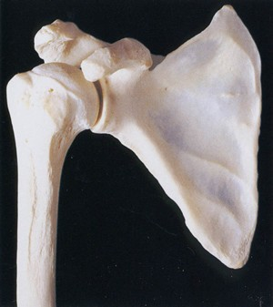
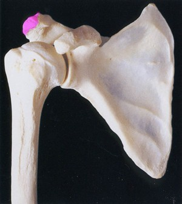
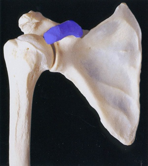
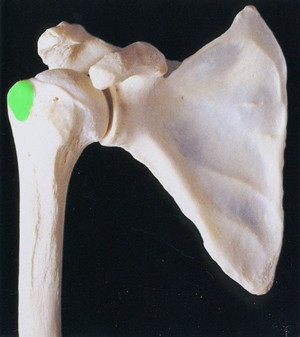
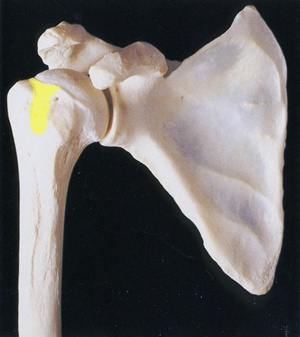
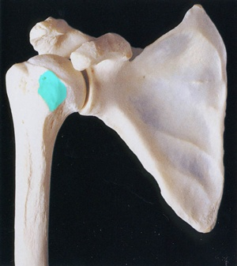

2 YearsSmall BonesFigure 21a: The Hand at 2 Years2 YearsSmall BonesEpiphysesFigure 21b: The Hand at 2 YearsFigure 21c: AdultFigure 21: Developing bones of the hand at a) 2 years, b) 4 years and c) Adult2 Years4 YearsAdultFigure: The Developing Skeleton

The bones of the shoulder joint

Acromial

Coracoid

GreaterTubHead

InterGroove

LesserTubFigure: Bones of the Shoulder Joint 1The bones of the shoulder jointAcromialCoracoidGreaterTubHeadInterGrooveLesserTubFigure: Bones of the Shoulder Joint 2